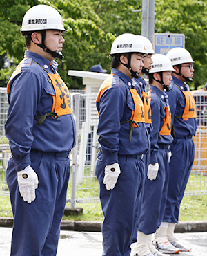
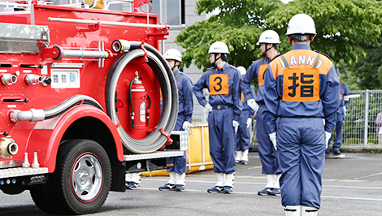
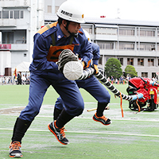

|  | ソーホーって何？  |
| ソーホーと言えば、一般的には、スモールオフィース(SO)、ホームオフィース(HO)を指すのでしょうが、消防団でソー ホーと言えば、小さな事務所や自宅で事業を始めることではありません。正式には消防操法と書き、消防器具の操作手順を指します。消火活動を想定し、ポンプ の始動からホースの延長、放水までの一連の操作を4人ないし5人で行います。操法は小型ポンプ(数人で持ち運ぶことができます)とポンプ車(自動車とポン プが一体となっています)に分かれ、迅速な行動と的確な器具の取扱いが求められます。一見するとロボットのような動きは、大げさで、初めて見る人には、多 少滑稽に映るかもしれません。しかしながら、火災現場で自分自身の安全を確保し、一刻も早く火を消すためには、消防団員としては絶対に身に付けなくてはな らない技なのです。 |  |
飯能消防団団本部は団長以下、各分団からの出身者11名で構成されています。
飯能団全体の活動や対外的な交渉・交流等を担当しています。